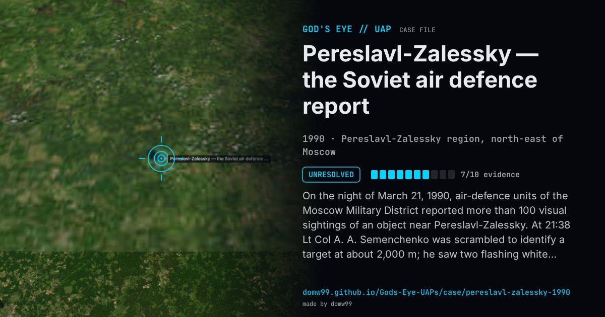

Pereslavl-Zalessky — the Soviet air defence report

On the night of March 21, 1990, air-defence units of the Moscow Military District reported more than 100 visual sightings of an object near Pereslavl-Zalessky. At 21:38 Lt Col A. A. Semenchenko was scrambled to identify a target at about 2,000 m; he saw two flashing white lights and a dim silhouette against the lights of the town, and the target did not answer his identification interrogation. Other pilots and radar posts gave times, bearings and distances; one ground radar post reported a fast-moving shining object with red lights, followed by another with white lights. In Rabochaya Tribuna on April 19, Colonel General Igor Maltsev, chief of the Main Staff of the Soviet Air Defence Forces, published excerpts: a disc 100 to 200 m across with two pulsing lights, flying silently between 1,000 and 7,000 m, at two to three times the speed of a modern fighter, rotating and hovering. Maltsev said he was “not a specialist on UFOs” and could only correlate the data. It was the first time a Soviet commander of that rank described such a case in public; the underlying reports have not been released, and no explanation was published.
What was seen
Shape: A disc 100–200 m across with two pulsing lights on its sides
Witnesses: More than 100 observers reported by air-defence units of the Moscow Military District; interceptor pilots Lt Col A. A. Semenchenko and others; radar crews
Duration: Evening into the night
Sources
- New York Tribune, 21 June 1990: Soviet general describes UFO (transcribed by Patrick Gross)
- Arizona Republic, 15 July 1990: Soviet air defence and UFOs (transcribed by Patrick Gross)
Browse
- Russia
- 1990s
- Unresolved
- Radar-visual cases
- Official government documents
- Many independent witnesses
- Military witnesses
- Pilot and aircrew witnesses
- Radar tracking
- Lights and fireballs
- Discs and saucers